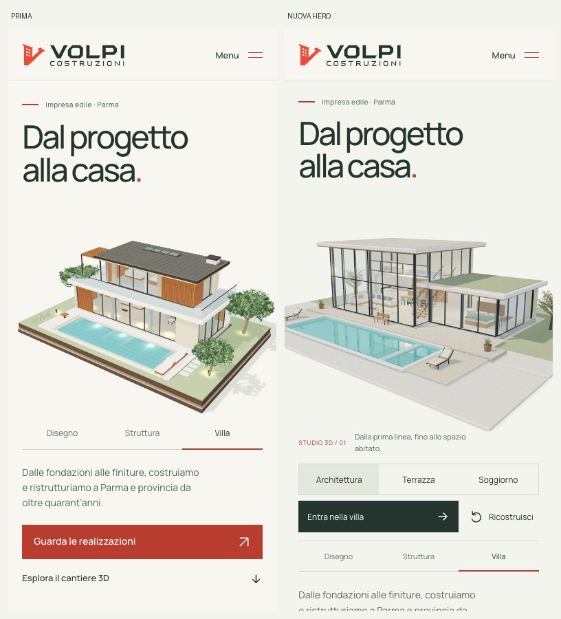
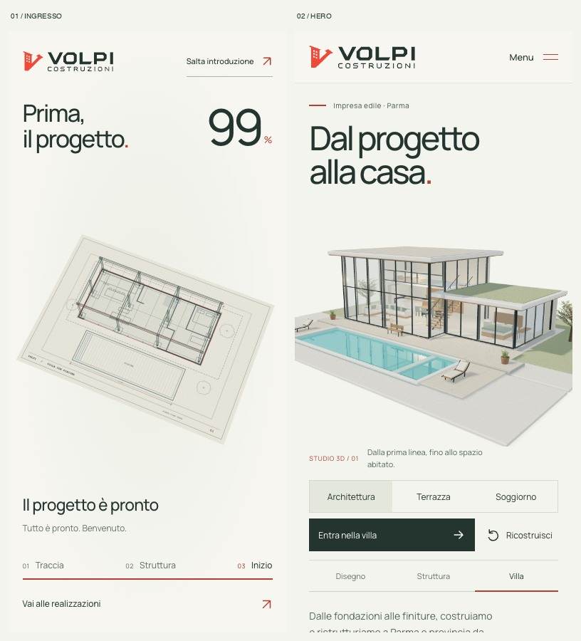
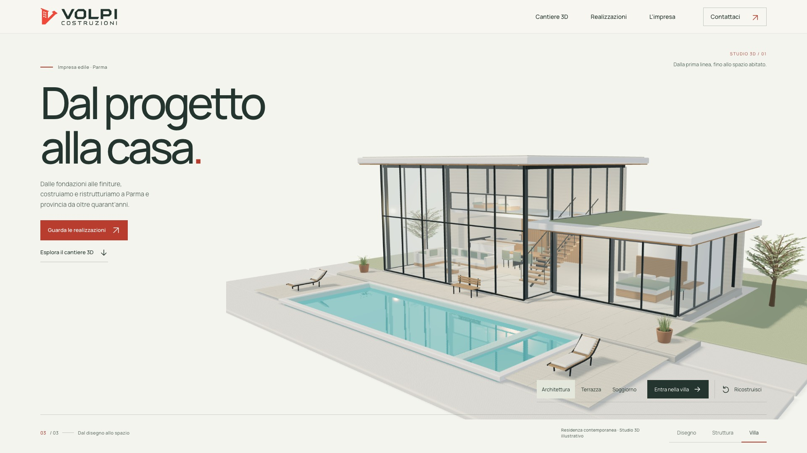
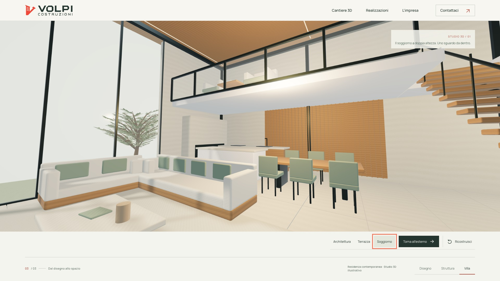
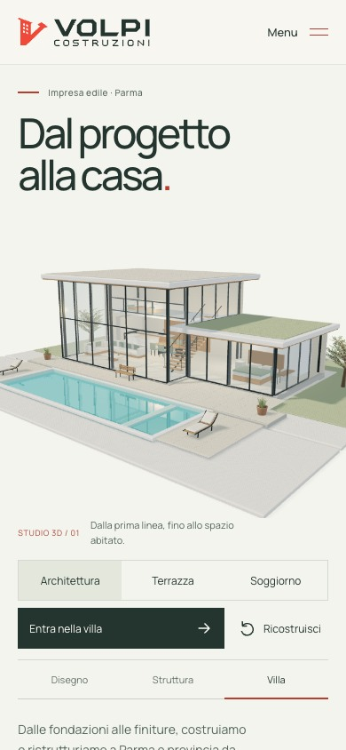

Volpi Costruzioni · confronto della revisione
Una nuova residenza.
Un ingresso distinto.
L’apertura è una tavola tecnica: pianta, tracciato rosso e struttura a filo. La hero costruisce una villa contemporanea vetrata, dal progetto agli ambienti abitati, con viste sull’architettura, sulla terrazza e dentro il soggiorno.
Le due sequenze hanno soggetti, inquadrature e funzioni diverse. Il cantiere a scorrimento e le sei realizzazioni fotografiche restano disponibili.
Il confronto visivo




Caricamento: tempo e peso
| Profilo | Home utilizzabile | Dati iniziali |
|---|---|---|
| Mobile | 4,381 → 4,355 s | 0,719 → 2,446 MB |
| Desktop | 4,388 → 4,415 s | 0,752 → 2,446 MB |
Il tempo resta sostanzialmente invariato; il caricamento iniziale è più pesante. La nuova residenza aggiunge un modello GLB da circa 1,499 MB, il disegno compresso e la preparazione della scena prima dell’ingresso. È un incremento di contenuto e qualità visiva, non un miglioramento prestazionale.
Stesse condizioni di laboratorio: Chrome su Mac M3 Pro, viewport 390 × 844 e 1920 × 1080, DPR 2, cache disabilitata e contesto nuovo per ogni visita. Rete a 10 Mbit/s in download, 2 Mbit/s in upload, latenza 40 ms; CPU senza rallentamento artificiale. Gzip livello 6 per le risorse compatibili. Il tempo misura il primo fotogramma con home interattiva; i dati sono quelli trasferiti fino a quel momento, non il peso di tutto il sito. MB decimali.
Animazione e interazione
Sul mobile emulato, il campione finale della costruzione ha un 95º percentile di 16,7 ms e un massimo di 33,3 ms; le tre visite guidate arrivano al massimo a 16,8 ms. Da fermo e fuori vista il renderer non ridisegna. Il passaggio iniziale evita ora il disegno superfluo della villa completa prima della pianta.
Il desktop resta variabile sotto carico. Nella sessione finale: costruzione automatica p95 33,4 ms, massimo 133,3 ms; visita al soggiorno p95 100 ms, massimo 150 ms. Una replica del sito precedente nella stessa sessione di lavoro arriva a p95 83,4 ms e massimo 233,3 ms, contro 16,7/16,8 ms nella baseline iniziale. Sul Mac erano attivi anche Blender, Ableton e FFmpeg: è un indizio di contesa, non una prova della causa dei singoli scatti. I campioni sono tutti conservati; serve una verifica desktop senza lavori concorrenti e su dispositivi reali.
La costruzione automatica si conclude sulla villa finita. Le viste Architettura, Terrazza e Soggiorno permettono di avvicinarsi agli spazi; “Ricostruisci” riparte dal progetto. Si tratta di punti di vista preparati, non di una navigazione libera in prima persona.
- 10 scenari Chrome e 5 WebKit superati.
- 8 controlli sul ciclo di vita e salto anticipato della scena e dei suoi fallback.
- 3 verifiche di layout, comprese dimensioni mobili.
Schermo e input mobile sono emulati sul Mac: nessun telefono fisico è stato utilizzato. Le misure non attestano 60 fps su ogni dispositivo e non sono dati LCP/INP raccolti sul campo.
Le viste verificate






La residenza e i suoi interni sono uno studio architettonico illustrativo originale, non il rilievo di un’opera Volpi. Le sei fotografie del portfolio conservano la loro funzione documentale.